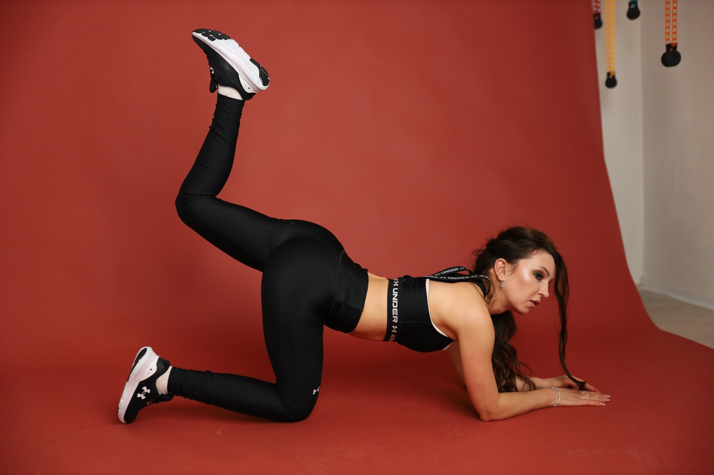
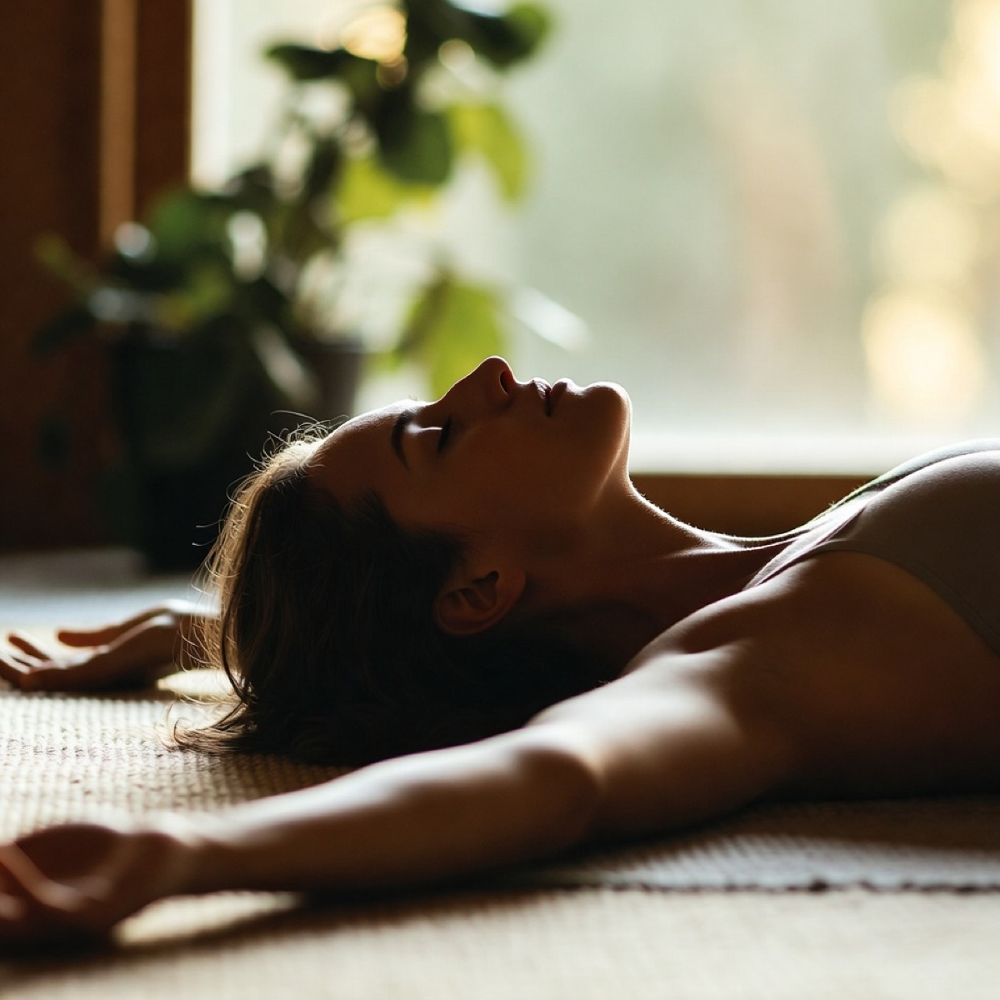
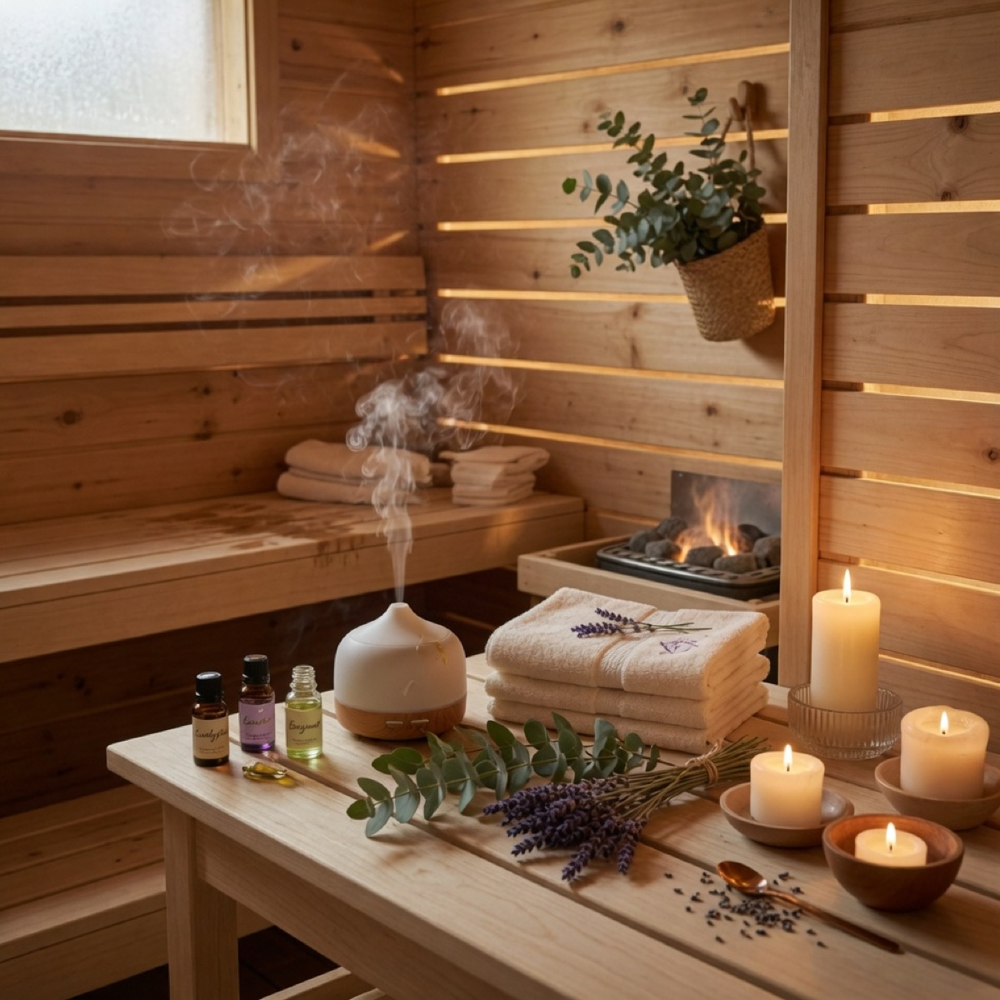
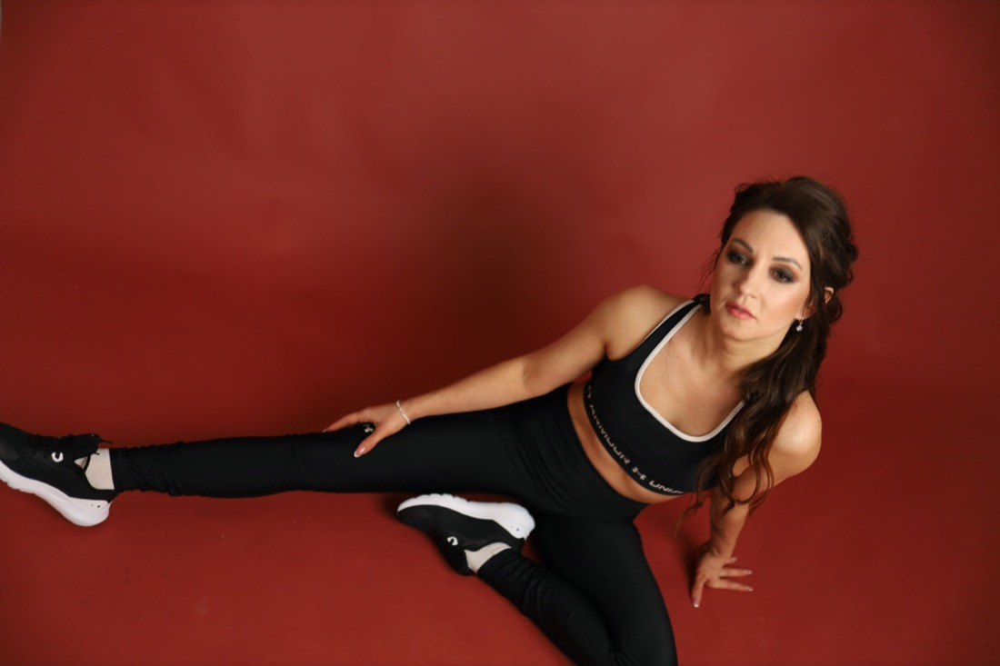
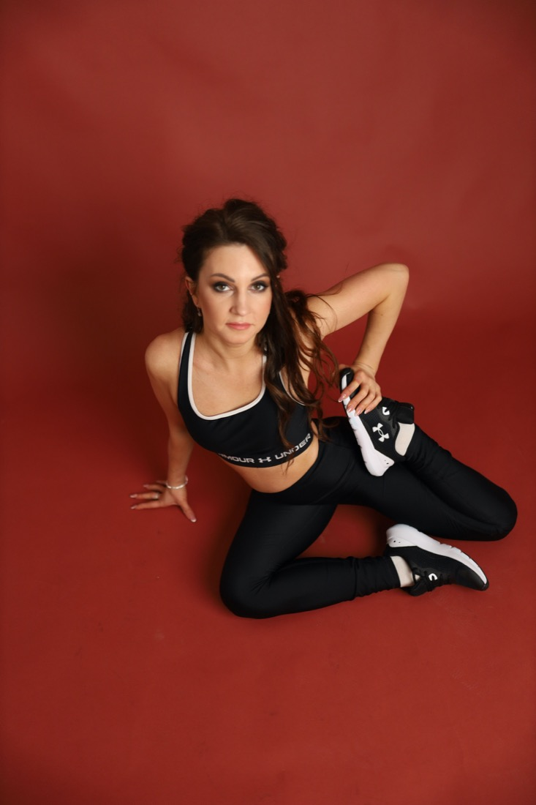
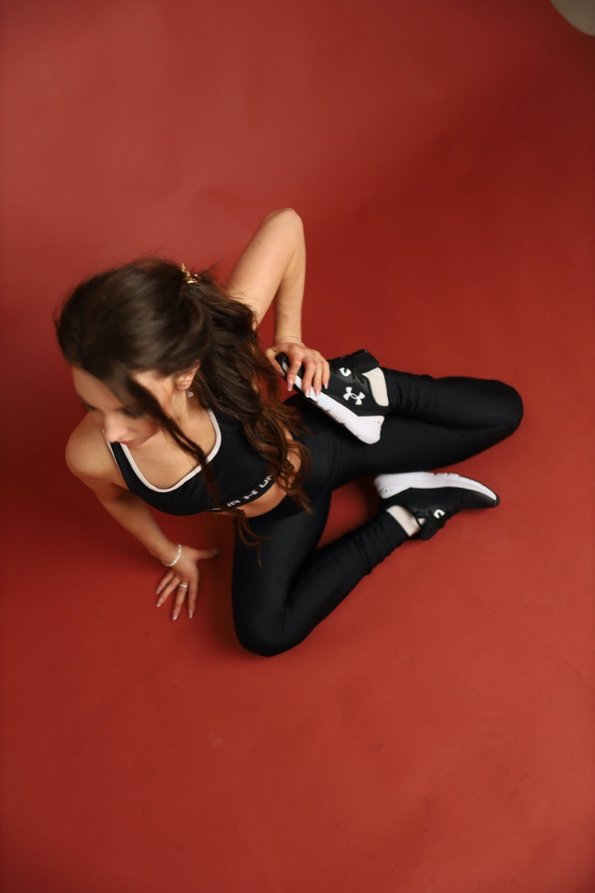
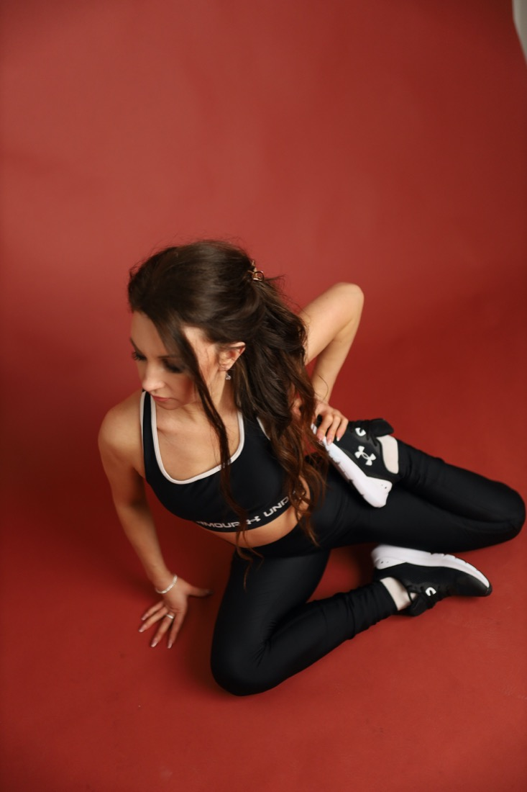

Робота з тонусом, кровообігом, плавністю руху і відчуттям легкості в тілі.

stretching / flexibility / body wellbeing
М'яка робота з тілом, гнучкістю і відчуттям себе.
Персональні та групові заняття з Катериною Чумаковою для тих, хто хоче більше свободи в русі, спокою в тілі та красивої дисципліни без тиску.
online
offline
mini groups
Stretching тут не про примус. Це про уважність, дихання, стабільний прогрес і тіло, якому знову хочеться рухатися.
01 / about
Катерина веде заняття в естетиці спокійної сили.
У роботі Катя поєднує stretching, mobility, body movement і wellness-підхід: без гучних обіцянок, зате з уважністю до рівня підготовки, настрою та реального стану тіла.
Формати підходять для старту з нуля, повернення після паузи, роботи над шпагатом, розкриттям рухливості та м'яким розслабленням після щільного графіку.

02 / directions
Три напрямки, один відчутний результат: тілу стає легше.
main
Stretching Programs
Натисніть, щоб обрати окрему програму: від м'якої роботи з тілом до шпагату
і гнучкої, здорової версії себе.
Поступовий прогрес у шпагаті через mobility, розкриття тазостегнових і контроль.
Комплекс для постави, рухливості, м'якої сили і комфортної амплітуди.

aromaAroma Diagnostics
Аромадіагностика як делікатна сенсорна практика для підбору ароматів, настрою і м'якого wellness-супроводу.

saunaSauna Rituals
Банні формати, тепло, аромати і тілесне розслаблення для камерної wellness-атмосфери.
03 / sessions
Формати занять, які легко обрати під свій ритм.
01
Individual Training
Персональна робота online або offline: ціль, темп і навантаження підбираються індивідуально.
02
Group Classes
Міні-групи з камерною атмосферою, де є енергія спільної практики і достатньо уваги.
03
Flexibility Practice
Stretching, mobility і робота над шпагатом для поступового, красивого прогресу.
04
Wellness Session
М'які body practices для розвантаження, тілесного комфорту і відновлення після напруження.

body movement
Практика, після якої тіло звучить тихіше, але впевненіше.
04 / events
Дівичники, виїзди і ретрити з тілесною wellness-атмосферою.
Wellness дівичники
Камерний формат для подруг: stretching, м'які body practices, ароматерапія, розслаблення і красива атмосфера без поспіху.
Виїзди на 1-2 дні
Програми у саунах, готелях, заміських просторах або приватних локаціях: тепло, рух, відновлення і повільний жіночий ритм.
Комбіновані ретрити
Stretching можна поєднувати з банними ритуалами, aroma-практиками, beauty, психологією, нутриціологією або участю інших спеціалістів.
05 / gallery
Рух, форма і характер.





06 / reviews
Відчуття після практики.
“Після заняття тіло ніби видихає. Дуже спокійний темп і водночас відчувається робота.”
Індивідуальна практика
“Було легко почати, навіть без підготовки. Катя уважно пояснює і не квапить.”
Stretching class
“Красива атмосфера, м'яка енергія і приємне відчуття прогресу вже після кількох занять.”
Mini group
booking
Запис на заняття
Напишіть Катерині, щоб обрати формат, рівень навантаження і зручний час. Контакти можна замінити на реальні посилання перед запуском.